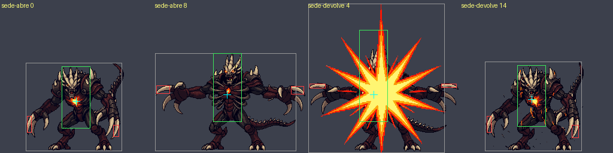
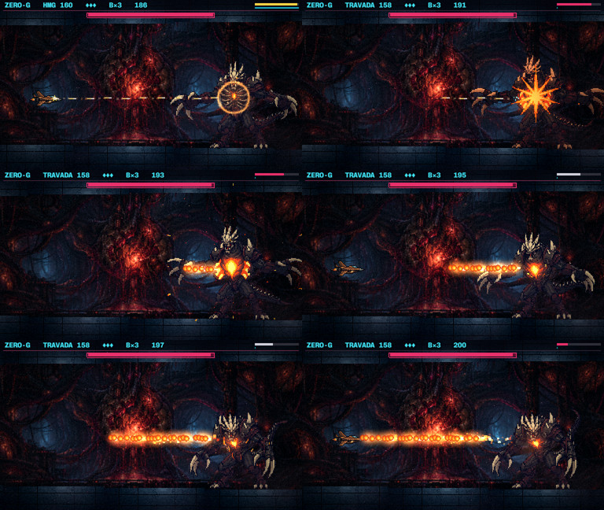
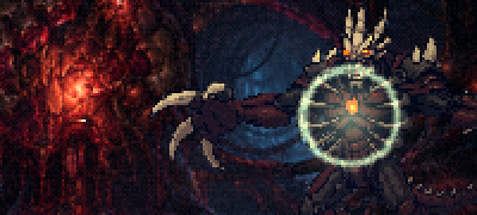
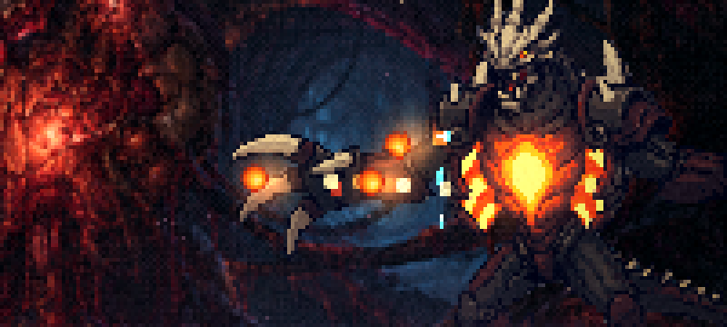
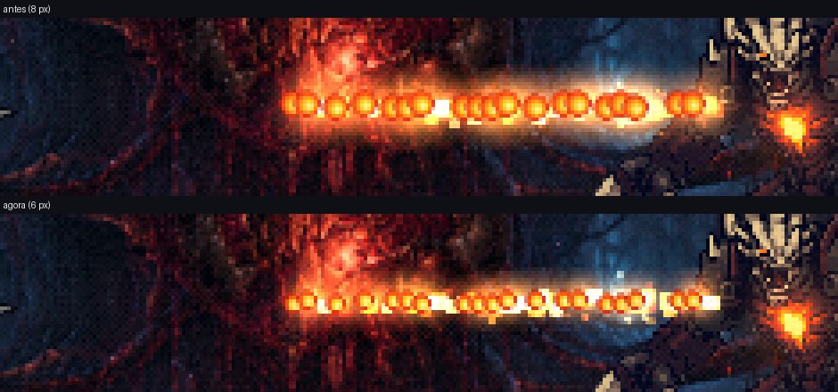
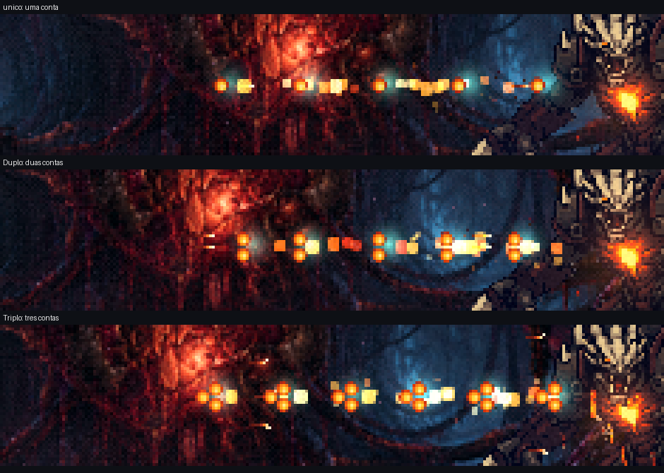

25/11. Spec 2026-11-24-besta-refeita-design.md §4.1 e a trava do §3; o plano está em plans/2026-11-25-besta-passo5-sede.md. Tudo foi filmado no jogo rodando (?fase=besta1&mao=nenhuma), no tempo real, com a nave parada e invulnerável. Nada aqui está aprovado.




25/11, as suas respostas: o 1 e o 2 estão ok. No 3, a gota ficou um pouco menor: foi de 8 px para 6 px, com a luz menor junto (os GIFs acima foram regravados). O 4 fica como está: a trava existe e conta a sede mesmo sem nada bebido. Assim ninguém fica preso na porcentagem, inclusive quem entendeu a mecânica e para de atirar para não receber o tiro de volta. O 5 está explicado na conversa.

A gota devolvida veste a forma do tiro que você atirou:
É só o desenho. O acerto continua 6 px, e a linha, o tempo e a velocidade não mudam. As duas linhas do Duplo (4 px uma da outra) voltam como uma linha de pares, então o Duplo devolve o mesmo tanto de tiros que o único (7 nos 2,0 s). As outras armas continuam com uma conta.



| O que fiz | Por quê | |
|---|---|---|
| 1. O agrupamento | Li o "< 4 px viram um" da spec ao longo de cada linha. Dois devolvidos da mesma linha (mesma direção, a < 4 px de lado) que sairiam a < 4 px um do outro viram um. | Se cada linha virasse um tiro só, a HMG parada devolveria um único tiro, e a spec pede uma parede. |
| 2. O teto de 24 | Passando de 24, fica um subconjunto espaçado por igual que guarda o primeiro e o último de cada linha. | A figura do jogador se mantém, só mais rala. |
| 3. A velocidade da volta | 240 px/s para toda arma. | Na velocidade do tiro dele (até 500 px/s) não dá tempo de sair da altura. |
| 4. O tiro devolvido | A gota de lava dela, reta, com a luz na cor da arma bebida. | A spec manda os projéteis de carta voltarem como tiro comum dela, e ela não tinha um. A gota já é dela e lê como perigo. |
| 5. O anel | Raio 18 px, 2 px de espessura, assado em pixel e aditivo. Abre em 150 ms, pisca a cada gole e fecha junto com o peito. | Cobre o peito aberto. A coluna do tronco (±17 px) fica dentro dele, então o tiro na altura do core sempre chega ao anel. |
| 6. A trava conta a sede no tranco | Mesmo sem nada bebido. | Senão quem não atira nela ficaria travado em 66 % para sempre. |
| 7. Os tempos | Virar 450 ms, abrir 400 ms, aberta 2,0 s, fechar 250 ms, devolver 1100 ms (o tranco no quadro 4), virar 450 ms. São 4,7 s no total, mais 0,6 s de recuperação. | O 2,0 s é o ponto de partida da spec. Os outros tempos seguem o ritmo dos clipes do passo 4. |
| 8. A bomba | O tiro devolvido é tiro inimigo comum. A bomba de pânico limpa a devolução inteira (testei). A bomba de queda, que é a de hoje, fere por raio e não limpa tiro nenhum, então também não limpa a devolução. | A spec diz "como limpa qualquer tiro inimigo". Hoje é exatamente isso, porque a bomba de queda não limpa tiro inimigo nenhum. |
node --experimental-transform-types scripts/test-besta-sede.mjs), 15/15:
node scripts/_f4/_besta-sede.mjs [pasta]), tudo certo:
damage(100) com a vida cheia para em 66,1 %; a próxima é a sede, e ela a escolhe sozinha;src/entities/besta/sede.ts (as regras), os dois testes e a cena sede em _ver-besta-nova.mjs;Predador.ts (o estado, os clipes, o anel, o beber, o tranco, a trava), BossNucleo.ts e Boss.ts (o beber), GameScene.ts (o beber antes de todo acerto e a cada quadro) e besta_folhas.py (a coluna do tronco e o core corrigido). Nada commitado.